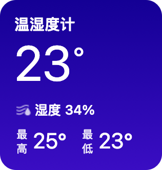
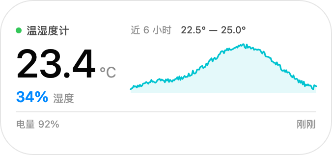
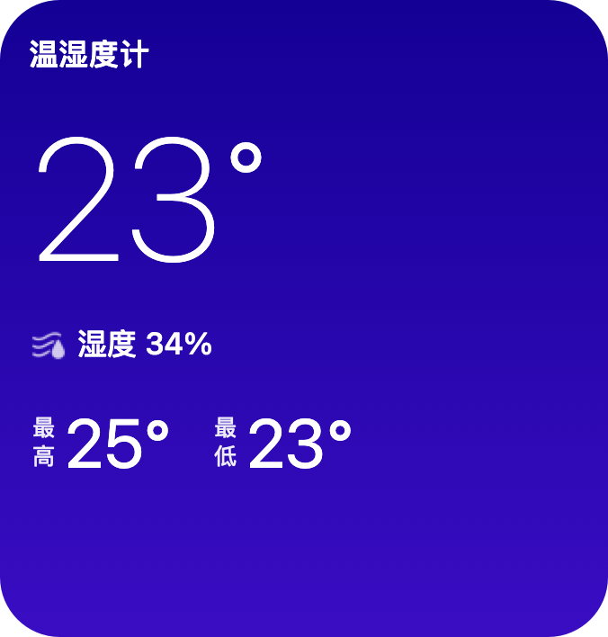
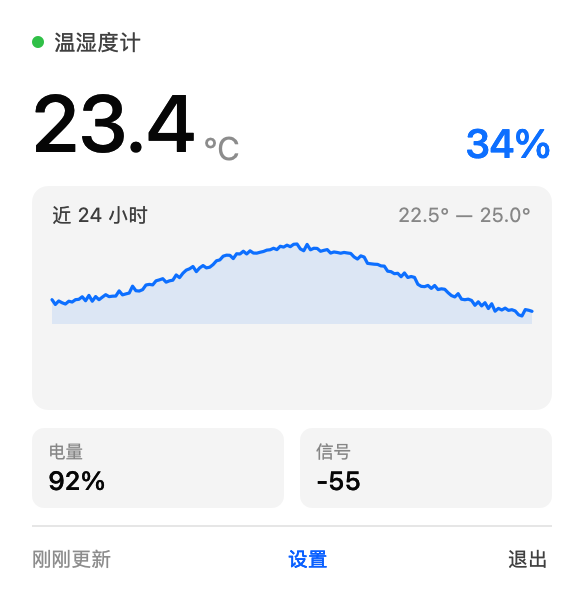
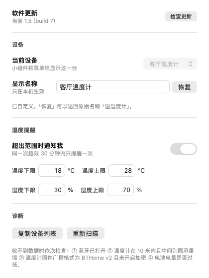

TempBar 被动监听温湿度计的 BTHome 蓝牙广播，实时显示温度和湿度。 三种尺寸、两套主题、近 24 小时曲线。不配对、不连接、不耗温度计的电池。

没有账号、没有云同步、不联网也能用。装完就是一个常驻桌面的温度读数。
只接收 BTHome 广播包，不发起连接、不配对。温度计的电池寿命和用官方 App 时一样。
贴苹果天气的深紫渐变，或跟随系统深浅色的浅色卡片。小号、中号、大号都能自由组合。
数据留在本机，按分钟落盘。中号和大号直接画出温度走势，看得到升温和降温的拐点。
自动记录当天已测到的极值，不用翻记录。放在卡片最下面一行，和苹果天气组件的排版一致。
温度或湿度越过设定范围就发系统通知，适合盯机房、酒柜、温室这类怕过热过潮的地方。
菜单栏里点「检查更新」，自动下载新版本、校验 sha256 再替换，不用重新安装一遍。
截图取自真机，没有做过美化。




不需要 Xcode，也不需要开发者账号。
点上面的下载按钮拿到 TempBar.zip，解压后把 TempBar.app 拖到「应用程序」文件夹。
这个包是本地 ad-hoc 签名的，直接双击会被 Gatekeeper 拦下。在图标上右键选「打开」，再点一次「打开」即可。之后就能正常双击了。
第一次启动会申请蓝牙权限，必须允许，否则收不到广播。授权后菜单栏出现温度图标，桌面上的小组件会在十几秒内读到第一个数。
刷了自定义固件、并且广播格式为 BTHome（service UUID 0xFCD2）或 ATC1441（0x181A）的机型都可以，比如 LYWSD03MMC、MHO-C401、CGD1 等。程序里没有写死任何设备型号、名字或 MAC，只要广播能被解析就会自动出现在列表里。注意广播不能开启加密，否则读不出来。
先确认三点：温度计的固件里广播格式选的是 BTHome 或 ATC（不是 MiBeacon）；加密关着；蓝牙有效距离内没有遮挡。菜单里还有「诊断」可以扫描全部蓝牙设备，用来排除是温度计没广播还是本机蓝牙的问题。
不会。程序只挂在广播信道上收包，从不发起连接。温度计的功耗取决于它自己的广播间隔，和有没有人在听无关。
没有。所有读数都存在本机的 ~/Library/Application Support/TempBar，不上传、不联网。唯一的网络请求是你在菜单里主动点「检查更新」时去拉一次版本清单。
当前发布的包是 Apple Silicon 版本。Intel 机器需要自己用源码编译，把 build.sh 里 swiftc 的 -target 改成 x86_64-apple-macos13.0 再跑一次即可。